Всё, что игра показывает, снято с работающего билда 2026-07-31. Где экран
двигается - здесь он двигается: гифка снята с настоящего холста в реальном
темпе, а не нарисована. Где стоит - показан кадром. Разбор тактов - в
docs/storyboard-screens.md.
Что выбирается прямо сейчас - на отдельной странице: три правки от 6 августа. Иконка лифта там уже сделана и её надо просто посмотреть; слову на экране победы нужен номер из трёх, очереди в шахте - из четырёх.
Кадры этого раздела - от 31 июля, и четыре решения от 2 августа в них ещё не сняты. Что изменилось в билде с тех пор: у лунок появилась глубина (тень от стенок внутрь), на экране победы логотип поднялся, слово и фраза переехали к нему и выросли, кнопка подтянулась вверх, а подсказка лифта стала длиннее на паузу. Раздел «Варианты» ниже показывает каждое из них отдельно и описывает, чем оно кончилось; пересъёмка этого раздела - отдельный заход.
По порядку, как их видит игрок.
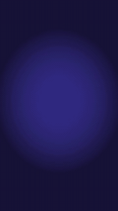
3 с. Пустая комната - это и есть экран загрузки: тот же фон, что под доской, просто уровень ещё не нарисован. Потом доска въезжает.
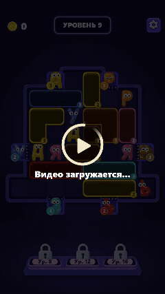
3 с. Межуровневый интер. Доска под скримом замирает, спиннер, «Видео загружается». Показывается не чаще раза в минуту - как в оригинале.
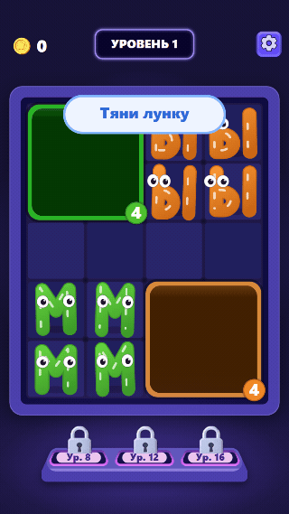
Цикл 2.2 с. Палец опускается на лунку, на нажатии сжимается до 90%, возвращается к 100% - и маска в этот момент вырастает на 110%. Дальше палец ведёт маску вниз на буквы и пропадает. Вверх не поднимается. Принято 2 августа - «вот это для тутора», без правок.
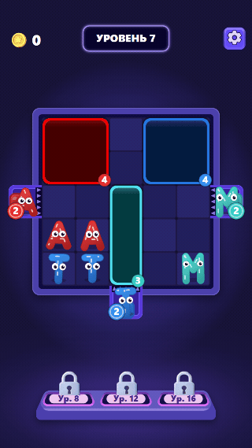
Цикл 2.65 с. Та же петля, но лунка едет к устью шахты. Пузыря нет: словами это уже сказал попап «Отлично». Цикл длиннее первого уровня на паузу: лунке тут ехать одну клетку, а не три, и с короткой паузой заход читался не как повтор, а как дёрганье вверх-вниз.
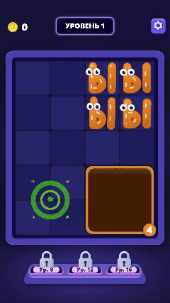
6 с, игра по пути солвера. Заглатывание букв, закрытие лунки
кольцом, победная кричалка словом МЫ - и тихая передача: на
первых трёх уровнях экрана победы нет, доска просто уезжает в следующий, а
монеты капают счётчиком +10.
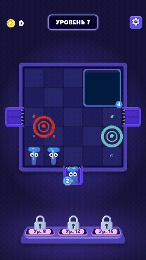
6 с. Лунка встаёт на устье, лифт отдаёт буквы по одной, счётчик на шахте убывает, и опустевшая шахта закрывает створки.
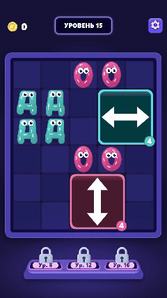
6 с. Лунка со стрелкой ходит только по своей оси и даже не отклоняется с неё.
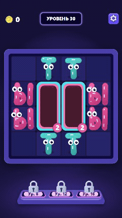
6 с. Внутренний слой закрывается, снимается со своим звуком и искрой, наружу выходит следующий цвет - и только последний слой закрывает лунку.
Снаряжённое состояние стоит на месте - это кадр. Работа бустера идёт две секунды - это гифка.
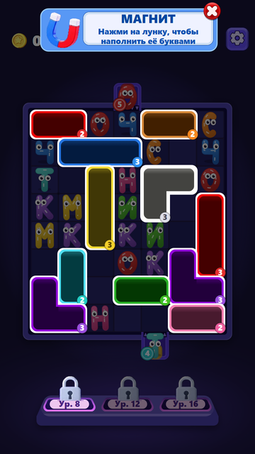
Шапка уступает место баннеру, буквы гаснут, у каждой открытой лунки белое кольцо, полка притушена, светится только сам слот.
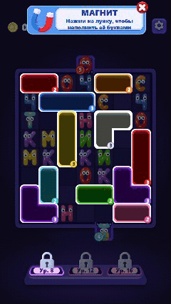
5 с. Тап по лунке - и буквы летят в неё по одной, ближние первыми, каждая в свою клетку. Лунка держит счётчик и схлопывается только когда сядет последняя.
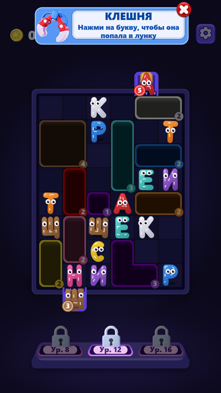
Здесь наоборот: гаснут лунки, а буквы остаются светлыми - включая переднюю в шахте, до неё клешня тоже дотягивается.
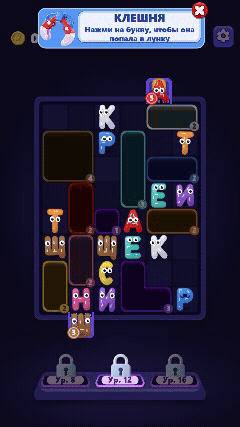
4 с. Тап по букве - она уходит в ближайшую открытую лунку своего цвета.
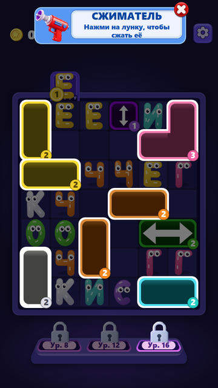
Кольца только на лунках от двух клеток: лунка 1x1 не цель. Стрелочные лунки он не берёт вовсе - сжатая стрелка запирает уровень.
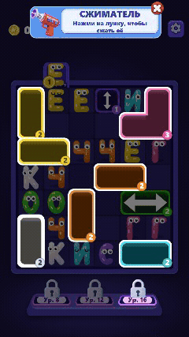
4 с. Лунка схлопывается в ту клетку, по которой ткнули; ёмкость не меняется.
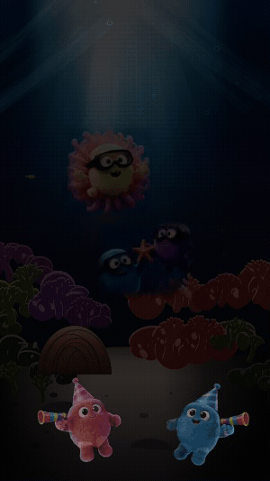
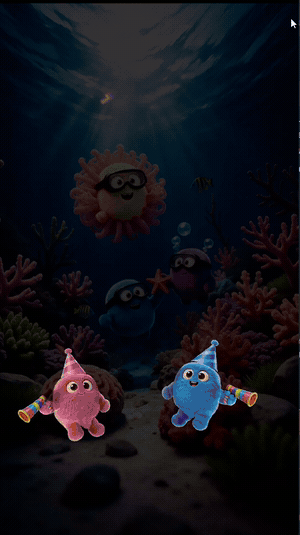
Такты почти совпадают: 0.25 логотип по буквам, 0.5 первый залп, 1.75 пара уходит вниз, 2.75 награды и обе шкалы, 4.25 и 4.5 шкалы заполняются, кнопка - 5.25 у них и 6.25 у нас, потому что между ними стоит наше слово уровня. Два честных отличия видны прямо здесь: у нас фейерверки крупнее и плотнее, и у них в строке наград две вещи - монета и сова (валюта Hoot Cup, который отложен).
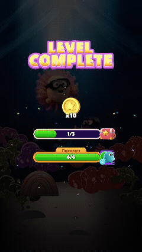
5 с. Приходит поверх экрана победы, когда шкала коллекции заполнилась: предмет на золотом солнце, «Сыграй дальше и попробуй!» и кнопка сразу на тот уровень, который его показывает. Бывает после 6-го, 14-го и 29-го.
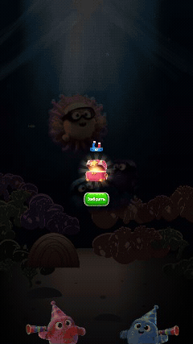
3 с. Вылетает снизу и раскрывается, когда шкала сундука дошла до 3/3 - то есть раз в три уровня. Это и есть «сундучки иногда вылетают»: «иногда» здесь значит «каждый третий раз».
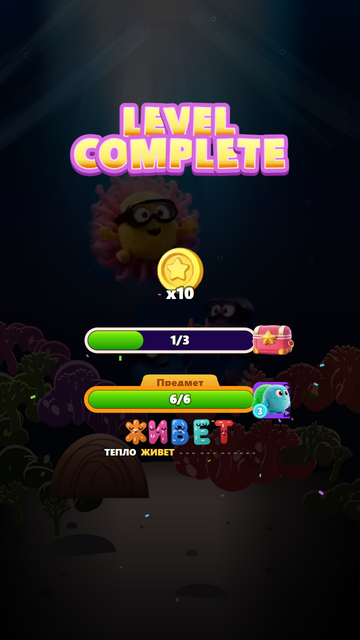
Не экран, а такт: буквы выкладываются по одной на 5.25-6.00 с, под ними едет строка фразы. Наша добавка - в оригинале этого нет.
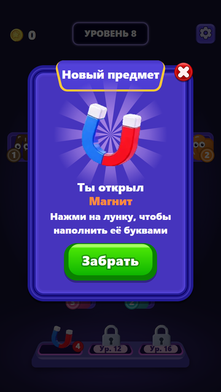
Первая из трёх фаз открытия бустера: предмет на фиолетовом солнце, «Ты открыл», имя оранжевым, зелёная «Забрать».
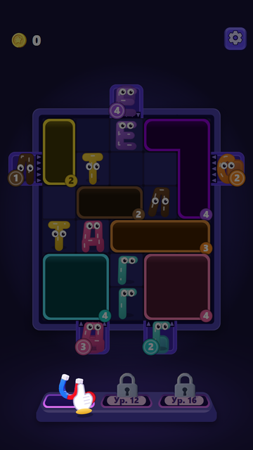
Вторая фаза: доска притушена, рука показывает на слот, баннера ещё нет. Рука покачивается - единственное движение в кадре.
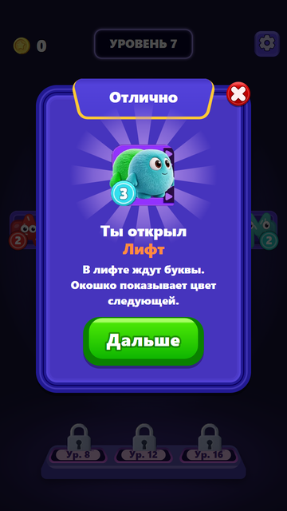
Пара для нового типа лунки: «Отлично», картинка механики, две строки объяснения, «Дальше». Так же выглядят попапы стрелки (15) и слоя (30).
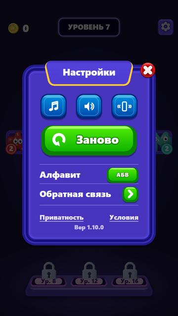
Звук, музыка, вибрация, обратная связь, перезапуск - и наша строка с алфавитом, которой в оригинале нет.
Полка бустеров на каждом кадре такая, какой она была бы у игрока на этом уровне. Видно и подписи сложности - Hard на 19, 25 и 35, Super Hard на 29 и 39.
Звук, 10 сентября: было и стало, послушать рядом - четырнадцать звуков, уже у игроков, и фоновая музыка, которая пока в черновике.
Открытый вопрос от 8 сентября: звуки игры - восемнадцать кью, по несколько вариантов на каждый, рядом с оригиналом из APK. Ждёт выбора.
Открытый вопрос от 3 августа: плюшевые коты на экране победы - четыре варианта, чем их заменить. Ждёт выбора.
Разбор записи Лёхи от 31.07 - расшифровка голоса и разбор по кадрам лежат в
docs/voice-2026-07-31.md. По каждому его замечанию собрано
несколько рабочих вариантов, снятых с отдельной копии сборки: это не рисунки,
а настоящий холст. Зелёная метка - что выбрано, оранжевая - что ещё ждёт
решения владельца, серая - что рассмотрели и не взяли. Как выглядит то, что в
итоге встало в билд, показано выше в разделе «Путь игрока».
Ответы от 2 августа. Подсказка первого уровня - «вот это для тутора», то есть как есть. Экран победы - «слово крупнее», вариант 2. Подсказка лифта - «тут ок, но рука сейчас дергается вверх вниз, надо чтобы не дергалась». Глубина лунок - обведён вариант 2. Всё четыре уже в билде. Без ответа осталась одна вещь - очередь в шахте.
Скрин, который он прислал с двумя красными стрелками: одна сверху в логотип, вторая длинной дугой снизу от строки со словом вверх. Читается так: логотип поднять, а слово с фразой перенести к нему вплотную. Сейчас слово лежит внизу, между шкалой предмета и кнопкой, и его никто не замечает - а это наша собственная механика, в оригинале её нет вовсе.
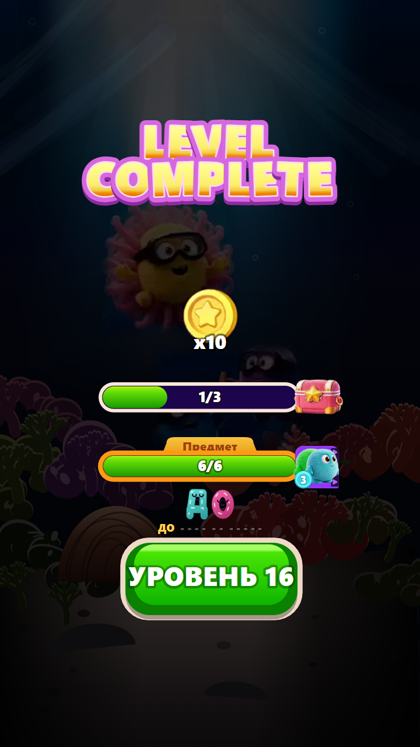
Логотип на 240, слово на 864 - у самой кнопки. Между логотипом и героем пустое место, а внизу тесно.
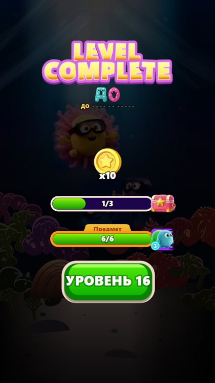
Логотип поднят на 70, слово и фраза встали в освободившееся место, кнопка подтянута вверх на 50, чтобы внизу не осталось дыры. Размер слова прежний.
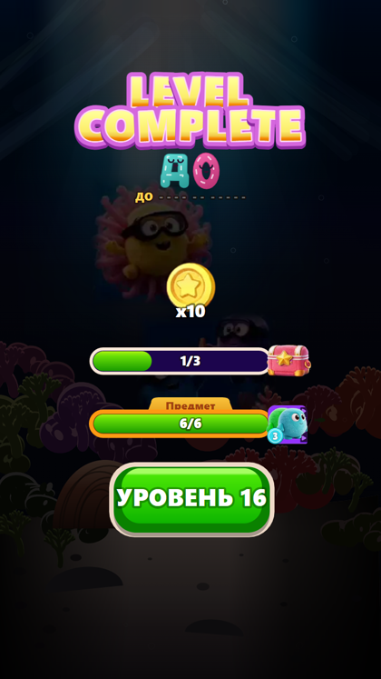
То же самое, но буквы слова выросли с 20 до 27, а строка фразы с 18 до 21. В заголовочном месте прежний размер читается как приписка. Выбран 2 августа («слово крупнее») и стоит в билде: логотип на 170 и 234, слово на 321, фраза на 372, кнопка на 880.
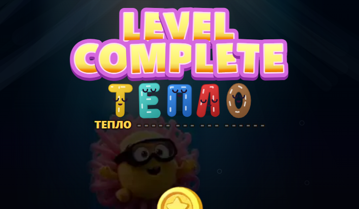
Уровень 5, слово ТЕПЛО. На двух буквах разницу вариантов почти не видно, на пяти - видно: логотип и слово читаются как один блок.
Два вопроса, которые этот перенос за собой тянет и на которые ответа пока нет. Первый: слово по-прежнему выкладывается на 5.25 секунде, после обеих шкал - то есть верх экрана полторы секунды стоит пустой. Возможно, теперь его надо показывать раньше. Второй: кнопка сейчас просто подтянута вверх, но, может быть, освободившееся место внизу стоит отдать чему-то другому.
Его слова, 0:12-1:31: «Сейчас не очень понятно, что это такое. Нужно показать нажатие. Палец опускается на дыру, она уменьшается на 10 процентов, потом возвращается, и только после этого едет вниз на букву». Первую сборку вариантов он забраковал словами «я не отличаю B от C» - и был прав: ужималась серая плашка, а она в момент нажатия спрятана под самой лункой. В этих гифках ужимается сама лунка.
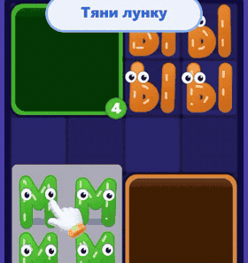
Как в оригинале: палец просто едет вниз и пропадает. Нажатия нет вовсе.
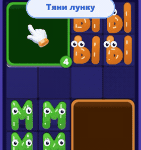
Ровно та цифра, которую он назвал. Заметно, но не бросается в глаза - именно этот вариант и стоит в билде.
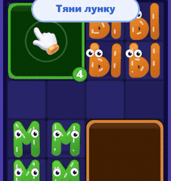
Запас на случай, если 10% на телефоне не прочитаются: палец ещё и проваливается, от него расходится белое кольцо.
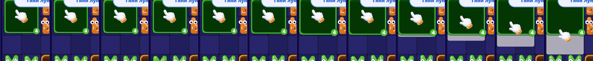
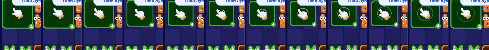
Гифка крутится и разницу поймать трудно, поэтому тот же такт разложен по кадрам. Видно, как лунка садится под пальцем и возвращается.
Его слова, 4:50-6:24: «Нужен туториал по-любому и для лифтов. Подъезжает платформа к букве, и из лифта прыгают буквы в дыру» - и вторым вариантом «либо палец подводит лунку». Владелец выбрал вариант с пальцем.
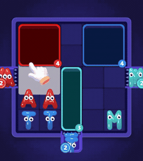
Палец прижимает лунку, ведёт её к устью шахты, оттуда выпрыгивает буква. Тот же язык, что и в подсказке первого уровня. Выбран 2 августа с одной правкой - «рука сейчас дергается вверх вниз, надо чтобы не дергалась»: на этой гифке она ещё дёргается. В билде пауза между заходами выросла с 0.3 до 0.75 с, а появляется палец не рывком, а проявляясь весь подвод. Жест не тронут.
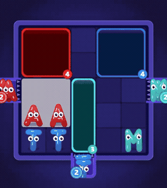
Без пальца: лунка подъезжает сама. Короче, но не показывает, что двигать её должен игрок.
Его слова, 6:24-6:55: «Мишанина из буковок, и это ещё они одинакового цвета, а когда разные - вообще... вот тут обрезается сверху. Наверное, одна буква должна быть всегда, а остальные можно просто цветами показывать рядышком». Речь именно про шахту, не про доску. Во всех вариантах кроме A передняя буква ещё и перестала обрезаться краем шахты - это и есть его «обрезается сверху».
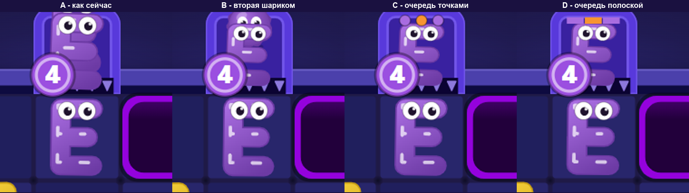
A как сейчас - две буквы одна за другой, задняя срезана. B - вторая просто шариком. C - очередь точками у дальнего края. D - очередь полоской.
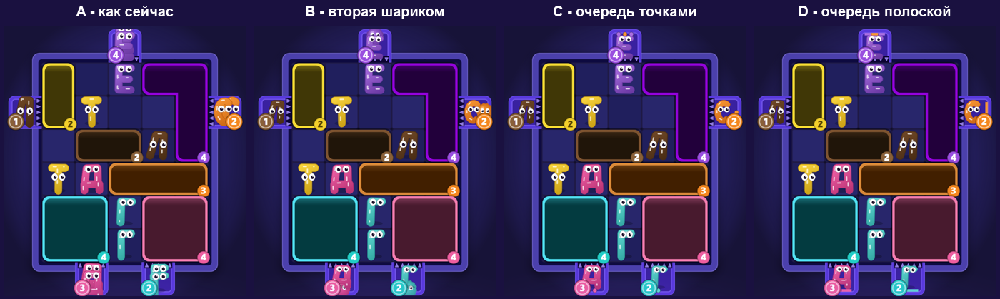
Уровень 8 - тот самый, на котором он это и говорил.
Его слова, 1:47-2:26: «Хочется у дыр показать глубину. Всё же ещё не знаю как. Можно рефы посмотреть, такие игры как Hole.io, там чёрные дыры, но они на Unity шейдером сделаны». И в 8:21: «если у нейронки не выйдет - дайте знать, отдам артисту». Спеки нет, поэтому это четыре пробы вслепую.
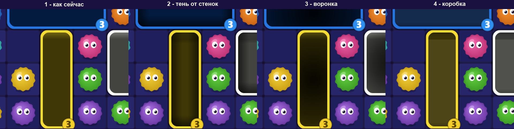
1 как сейчас - плоская заливка, как и в оригинале.
2 - тень от стенок внутрь. 3 - воронка, чернота копится к
центру. 4 - коробка с ближней стенкой сверху.
Обведён второй, 2 августа, и он в билде: чёрное на 0.55 у самой стенки,
сходит на нет через 0.36 клетки, отдельной тенью на каждую стенку, которая
смотрит наружу - на четырёхклеточной лунке это четыре тени по краям, а не
одна растянутая на всю коробку.
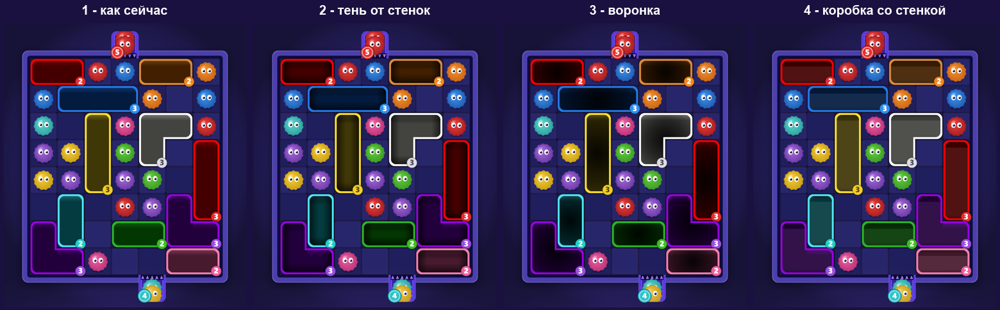
На доске разница мельче, чем на крупном плане - это тоже довод при выборе.
Снято до того, как выяснилось, что «мишанина» относится только к шахте. На доске буквы остаются как есть; листы лежат здесь на случай, если разговор к ним вернётся.
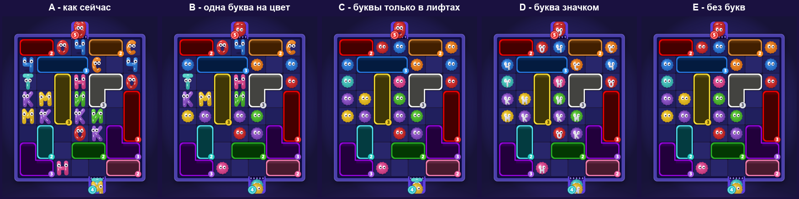
A как сейчас. B - одна буква на цвет. C - буквы только в лифтах. D - буква значком на шарике. E - без букв, ближе всего к оригиналу.
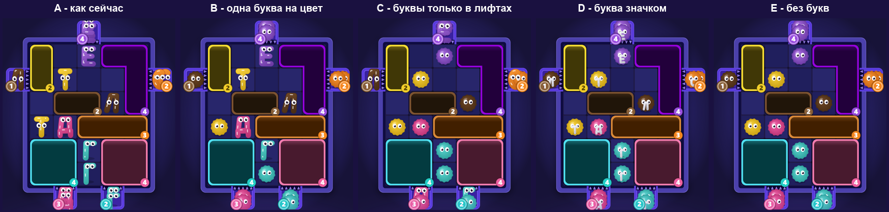
Для спора о конкретных тактах гифки мало - нужен лист с подписанным временем: наш экран победы, оригинал, подсказка первого уровня.
{kind=link}
{kind=link}
{kind=link}